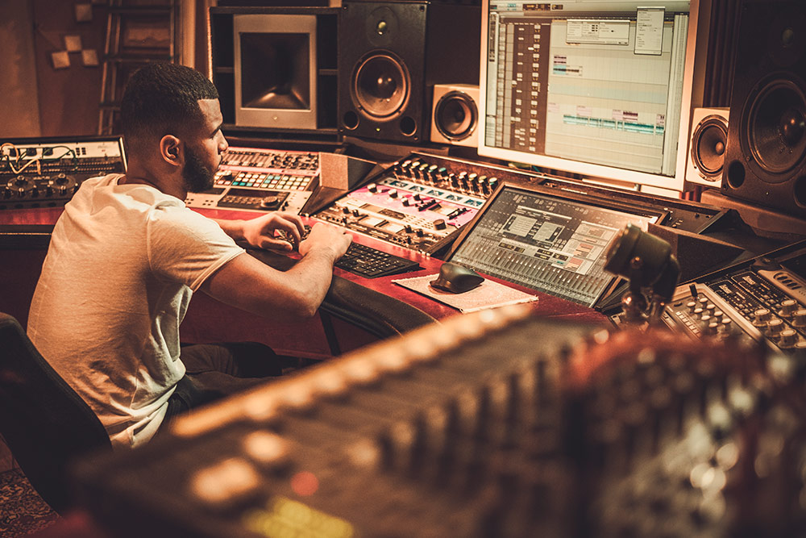

Transformamos tus momentos en experiencias inolvidables
DJ profesional, música personalizada, sonido de alta calidad e iluminación dinámica para tus fiestas y celebraciones.
Asesoramiento en mezcla, masterización y creación de proyectos musicales con enfoque profesional.

Implementación de sistemas de audio en locales comerciales, casas y edificios. Diseño acústico y optimización sonora.
Escríbenos para cotizaciones y reservas:
Email: contacto@tusonido.com
Teléfono: +593 999 999 999